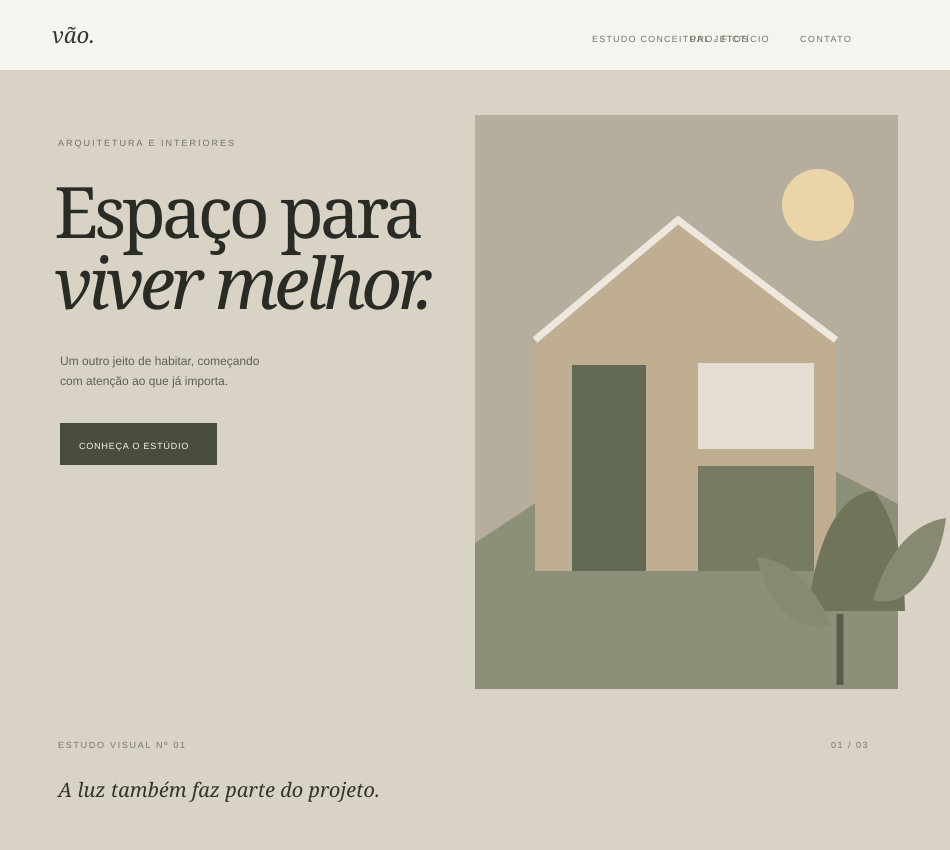

Landing pages
Páginas objetivas para apresentar uma ideia, produto ou serviço com clareza.
Web design / desenvolvimento
Crio landing pages e sites modernos, rápidos e cuidadosamente desenhados para marcas que querem se apresentar melhor na internet.

Seleção de trabalhos
Cada projeto é pensado para combinar identidade visual, clareza e funcionalidade.
Os exemplos exibidos são conceitos visuais fictícios. Novos projetos podem ser adicionados em js/projects.js.
Um processo claro, do início ao fim
Um caminho colaborativo, com decisões bem explicadas e atenção ao que faz diferença.
Entendimento do negócio, do público e dos objetivos.
Definição de referências, tipografia, cores e composição.
Implementação responsiva, interações e funcionalidades.
Testes, correções e preparação para publicação.
Como posso ajudar
O escopo é combinado com clareza antes de cada projeto.
Páginas objetivas para apresentar uma ideia, produto ou serviço com clareza.
Uma presença digital coerente com a identidade e as necessidades da marca.
Uma nova direção visual para sites que precisam comunicar melhor.
Ajustes de responsividade, hierarquia e detalhes de interface.
Por trás das telas
Desenvolvo experiências digitais com foco em clareza, estética e funcionalidade. Meu processo combina direção visual cuidadosa, tecnologia e atenção aos detalhes.
Vamos conversarTem um projeto em mente?
Um bom começo é uma conversa. Conte um pouco do que você está planejando.
js/projects.js.